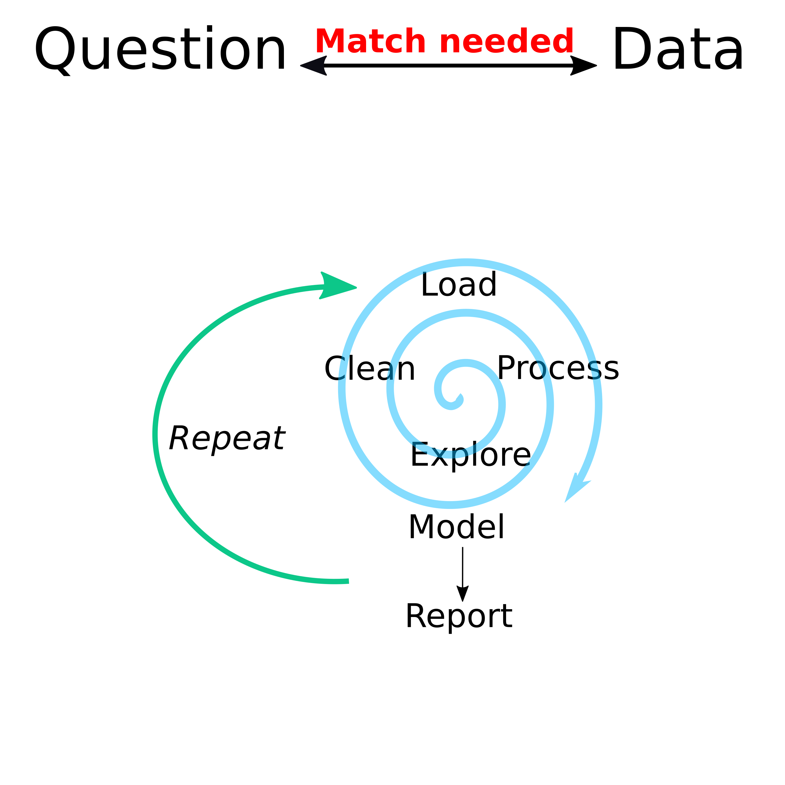

Exploring Data
Overview
In this unit, we will continue the topic of dealing with data prior to the actual statistical analysis.
While there were separate modules for finding and wrangling and visualizing data, I want to remind you of this diagram:

Different data-analysis related tasks rarely happen in a linear sequence. Instead there is a general stage before statistical analysis where you mess with your data (that’s a technical term 😁) to get ready for the main formal analysis. And often, as you start that formal analysis, you’ll have to go back and do some more cleaning/exploration.
Learning Objectives
- Learn how to explore your data
- Become familiar with preliminary analyses
Descriptive analysis
Before any statistical analysis, you should summarize and describe your data. Only some of that will end up in a finished product (e.g., a paper or a report), but it’s important that you do it thoroughly and exhaustively to ensure you fully understand your data and thus know what statistical approaches are and are not appropriate.
Descriptive analyses generally consist of making tables and figures that explore and summarize the data. Generally, you start with one variable at a time, and likely focus on the most important ones first. That means first you look at your outcomes of interest, then your main predictors/exposures of interest, then as much as feasible at all other variables. For continuous variables, you can use summary statistics (e.g., the summary command in R) or histograms (e.g. the hist command). For categorical variables, you can look at tables (e.g. the table command) or barplots (e.g. the barplot command). The idea is to see if anything unusual or interesting is going on. You might notice problems with the data (e.g., a person with a negative weight) that need cleaning. You might find that you have a categorical variable with a lot of categories that contain only a few entries and only a few categories with a lot of entries (e.g., religion could be such a variable). You might want to flag that for further processing (we’ll talk about that in the next unit).
Once you’ve explored each variable by itself, you can start looking at combinations. For instance plots with each outcome of interest on the y-axis and each main predictor on the x-axis could be of interest. Depending on the type of variable for the outcome or predictor (continuous, categorical, etc.), you might want different types of plots, as discussed in the visualization module. Tables are possible too.
Further figures of interest might be correlation plots which show correlations between all predictors in your data and might indicate potential issues you need to address before fitting statistical models. For instance if you have height, weight, and BMI in your data, you know that BMI does not have independent information (it’s a combination of height and weight), and thus these variables are perfectly correlated. Many – though not all – statistical models don’t like such strongly correlated variables, so you might need to decide to remove some strongly correlated data beforehand. We’ll talk about that more.
Preliminary/exploratory statistical analysis
Sometimes, it is useful to start running some simple models on your data. Sometimes, such models will become part of the main analysis, but often they are just used to help explore the data. For instance if you have two continuous variables and make a scatterplot, adding a linear regression line through the data might be helpful to see if there is a pattern. That is easily done if you make your figure with ggplot2, as you can just add a stats geom to it.
You could also explore your data by running simple bivariate statistical models, e.g. by fitting each predictor individually to the outcome of interest. We won’t talk much about standard regression approaches in this class, but I’m sure you are familiar with standard statistical tests that can be applied to two variables, depending on the types of variables (linear regression, t-test, etc.).
A note of caution: It is ok (in my opinion) to use standard statistical tests and readouts (e.g., p-values) to guide main model choices and as suitable, to report them in a final product. It is however only ok to interpret p-values in the hypothesis testing sense if you predefined the hypothesis and the full data generation and analysis protocol. Outside a clinical trial, that’s almost never done, thus pretty much any reported p-value you see in the literature is improperly used/interpreted. Everyone does it, and pretty much everyone does it wrong. The state of affairs when it comes to statistical literacy, even among PhD holders, is still sad…
Further reading
(Re)read the Exploratory Data Analysis and Using Models to Explore Your Data chapters (4 and 5) in The Art of Data science (ADS) book. We looked at that book previously. You don’t need to work/code along. But if you want to, see the Some practice section of the Data Analysis Overview page for some details on how to do it.
Also go through the rather short EDA tutorial which is part of the Visualize Data Posit Recipes.
The whole R4DS book focuses on the early stages of data analysis, including exploration. There is whole section called Explore and a chapter called Exploratory Data Analysis (EDA). I like this sentence from the beginning of their chapter: EDA is not a formal process with a strict set of rules. More than anything, EDA is a state of mind. That’s a very good way to put it. Skim through that chapter of R4DS (it’s very similar to the Posit EDA Recipe). And of course the rest of the book also provides lots of useful information on that topic.